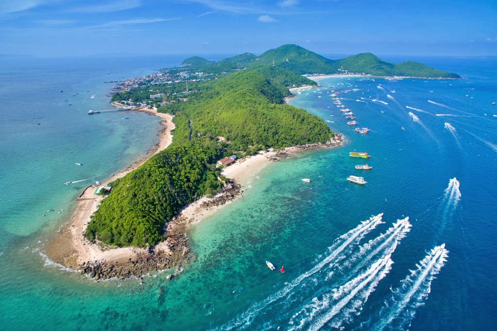
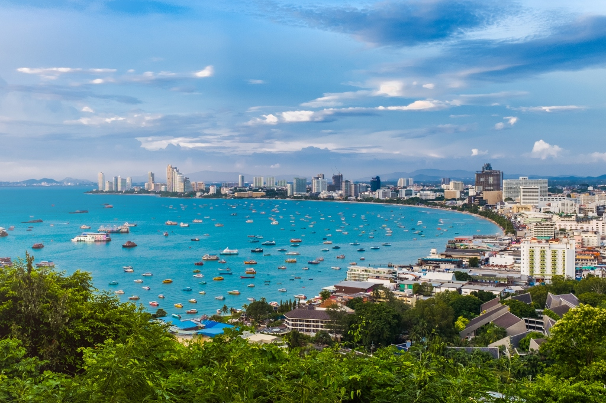

ข้อมูลทั่วไป
- ชื่อจังหวัด: ชลบุรี
-
ตำแหน่งที่ตั้ง: ตั้งอยู่ในภาคตะวันออกของประเทศไทย
- ทิศเหนือ: ติดกับจังหวัดฉะเชิงเทรา
- ทิศใต้: ติดกับจังหวัดระยอง
- ทิศตะวันออก: ติดกับจังหวัดฉะเชิงเทรา จังหวัดจันทบุรี และจังหวัดระยอง
- ทิศตะวันตก: ติดกับอ่าวไทย
สถานที่ท่องเที่ยว
- พิพิธภัณฑ์ปราสาทสัจธรรม: เป็นปราสาทริมทะเลที่สร้างจากไม้ทั้งหลัง มีขนาดใหญ่ที่สุดในประเทศไทย
- เกาะล้าน: เป็นเกาะในอ่าวไทย อยู่ในเขตเมืองพัทยา จังหวัดชลบุรี อยู่ห่างจากชายฝั่งเมืองพัทยาเพียงแค่ 7 กิโลเมตร
- จุดชมวิวเขาพระตำหนัก: เป็นภูเขาลูกเล็กๆ อยู่ระหว่างหาดพัทยากับหาดจอมเทียน ใกล้กับป้าย Pattaya City และวัดพระใหญ่
- หาดวงศ์อมาตย์: เป็นชายหาดทางตอนเหนือของเมืองพัทยาบนชายฝั่งตะวันออกของอ่าวไทย
- พิพิธภัณฑ์สัตว์น้ำ: พิพิธภัณฑ์สัตว์น้ำแห่งเดียวในเมืองพัทยา บนถนนสุขุมวิท แถวพัทยาใต้ รวบรวมสัตว์ทะเลมากมายกว่า 5,000 ชนิด
สัญลักษณ์ประจำจังหวัด
- ดอกไม้ประจำจังหวัด: ประดู่
- คำขวัญจังหวัด: "ทะเลงาม ข้าวหลามอร่อย อ้อยหวาน จักสานดี ประเพณีวิ่งควาย"
Highlight

เกาะล้าน

จุดชมวิวเขาพระตำหนัก

ป่าต้นน้ําบ้านน้ําราด